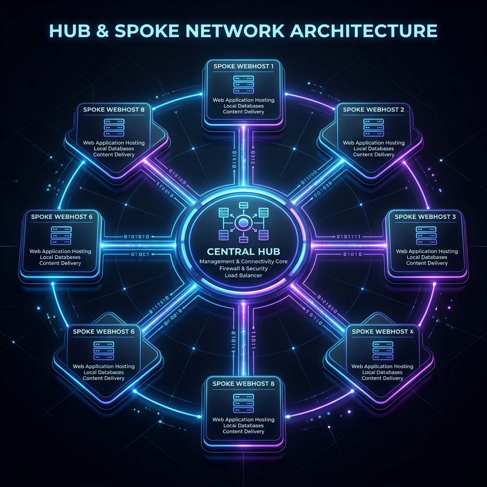

A self-configuring, resilient Hub & Spoke architecture designed to orchestrate autonomous edge services.

Designed around a central RPi5 'brain'. The Hub orchestrates master tasks—like network audits and backup rotations—while delegating localized operations to specialized Web Node spokes across the network.
Zero-touch configuration via the ~/.gladstone_mode identity card. Nodes auto-detect their role upon bootstrap, adapting their service footprint on-the-fly without manual intervention.
High-availability ensured by a 5-strike self-healing watchdog. Persistent tasks are silently restarted on failure. At strike 5, error logs are aggregated and escalated as urgent push notifications via an Ntfy relay.
Continuous hardware polling, real-time printer status scraping, and scheduled bandwidth audits. All telemetry is localized, preserving security while providing a comprehensive health overview via the Master Dashboard.
# Zero-Touch Deployment: Universal Bootstrap Command
cd ~ && rm -rf ~/scripts &&
git clone https://github.com/legendary034/pi5-scripts.git ~/scripts &&
cd ~/scripts && ./install.sh --ntfy
| Feature | Implementation | Benefit |
|---|---|---|
| Distributed Architecture | Hub & Spoke (RPi5 Centric) | Scalable edge orchestrations |
| Zero-Touch Setup | Bash-based Universal Bootstrap | Rapid deployment on new hardware |
| Telemetry Pipeline | Ntfy.sh alert relays | Real-time error escalation |
| Resiliency Engine | 5-Strike Watchdog Process | Autonomous self-healing services |